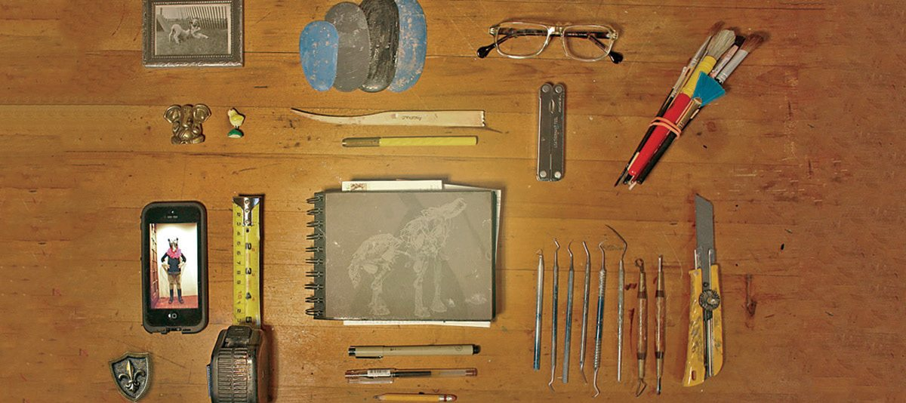

About

I make things. Big things. Small things. Beautiful things.
Born and raised in Montréal, I am a formally trained artist with a BFA from Concordia and a Medical Anthropology degree from McGill University. For 8 years I ran a sculpture & mould making studio in Montreal servicing the Film, TV and Theatre industries. My Arts practice is currently based in Toronto where I am an active member of the Arts community.
I am a proud Arts educator, teaching art to kids at the Clay with Me Pottery Studio and run the award-winning StudioStone Creative program in schools across the greater Toronto area. Feel free to like or follow me on twitter or instagram! my handle is Adrienne Ball.
Teaching Art has been put on hold, I am proudly working as a contact tracer/monitor doing my part to fight COVID 19!